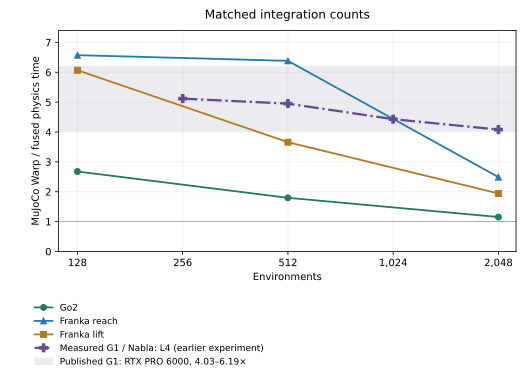
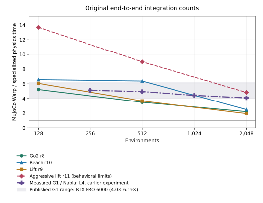

Task-specific CUDA physics in Isaac Lab
NVIDIA L4 · Final measurements · 4 November 2026
Compact CUDA implementations for Go2 locomotion, Franka reach and Franka lift pass all nine recorded behavioral comparisons. Physics-only speedups are 1.15–6.57× at matched integration counts; end-to-end speedups are 1.39–2.12×. Aggressive lift is separate because its object-family outcomes differ.
Physics-only comparison
CUDA events time collision detection and physics integration, excluding Isaac Lab actions, explicit actuator updates, sensors, observations, rewards, resets and task managers. Both engines refresh contacts every integration. Each pair starts from the same sampled state and prepared controls.
Matched integration counts



Original end-to-end integration counts



The purple curve is measured G1 / Nabla on this L4: 4.95× at 512 and 4.08× at 2,048 environments, the shared batch sizes. There is no G1 point at 128. The gray band is Nabla’s published RTX PRO 6000 Blackwell range, 4.03–6.19× across 512–16,384 environments; it is not a confidence interval.
Selected implementations: matched integration counts
Go2 advances 20 ms per control; reach and lift advance 33.333 ms. Go2 r8 uses four integrations, so its matched native timing uses four too. Reach r10 and lift r9 use eight on both sides.
| Task | Environments | Integrations/control, both | MJW ms/control | CUDA ms/control | MJW / CUDA | MJW kernels/control | CUDA kernels/control |
|---|---|---|---|---|---|---|---|
| Go2 locomotion (r8) | 128 | 4 | 1.685 | 0.630 | 2.68× | 491.7 (488 to 499) | 4 |
| Go2 locomotion (r8) | 512 | 4 | 1.986 | 1.106 | 1.80× | 533.0 (522 to 544) | 4 |
| Go2 locomotion (r8) | 2,048 | 4 | 3.768 | 3.268 | 1.15× | 558.7 (544 to 566) | 4 |
| Franka reach (r10) | 128 | 8 | 3.204 | 0.487 | 6.57× | 972 | 1 |
| Franka reach (r10) | 512 | 8 | 3.675 | 0.576 | 6.38× | 979.3 (972 to 983) | 1 |
| Franka reach (r10) | 2,048 | 8 | 5.229 | 2.101 | 2.49× | 1005.0 (972 to 1027) | 1 |
| Franka lift (r9) | 128 | 8 | 6.824 | 1.125 | 6.07× | 1201.0 (1190 to 1212) | 4 |
| Franka lift (r9) | 512 | 8 | 6.858 | 1.875 | 3.66× | 1290.3 (1269 to 1313) | 4 |
| Franka lift (r9) | 2,048 | 8 | 11.393 | 5.868 | 1.94× | 1316.7 (1247 to 1368) | 4 |
Counts are executed kernels from separate Nsight Systems traces, including conditional solver-loop repetitions and helpers. Variable counts show the mean and observed range; copies and memset operations are excluded.
Aggressive lift r11: matched integration counts
R11 combines analytic collision shapes, diagonal generalized inertia, gravity-only bias and four integrations. Its aggregate checks pass, but some object-family outcomes differ; see behavioral limits.
| Task | Environments | Integrations/control, both | MJW ms/control | CUDA ms/control | MJW / CUDA | MJW kernels/control | CUDA kernels/control |
|---|---|---|---|---|---|---|---|
| Aggressive lift (r11) | 128 | 4 | 3.383 | 0.498 | 6.79× | 628.0 (617 to 650) | 1 |
| Aggressive lift (r11) | 512 | 4 | 3.478 | 0.754 | 4.61× | 651.0 (629 to 673) | 1 |
| Aggressive lift (r11) | 2,048 | 4 | 5.913 | 2.392 | 2.47× | 684.0 (651 to 706) | 1 |
Original end-to-end integration schedules
The behaviorally tested native baseline uses eight integrations. Go2 r8 and aggressive lift r11 use four. These ratios preserve those schedules. Reach and selected lift are unchanged. The matched four-integration native runs above are timing controls whose task behavior has not been revalidated.
| Task | N | Integrations, native / CUDA | Native ms/control | CUDA ms/control | Speedup | Native kernels/control | CUDA kernels/control |
|---|---|---|---|---|---|---|---|
| Go2 locomotion (r8) | 128 | 8 / 4 | 3.294 | 0.630 | 5.23× | 965.0 (954 to 976) | 4 |
| Go2 locomotion (r8) | 512 | 8 / 4 | 3.860 | 1.106 | 3.49× | 1044.0 (1033 to 1055) | 4 |
| Go2 locomotion (r8) | 2,048 | 8 / 4 | 7.209 | 3.268 | 2.21× | 1073.3 (1066 to 1077) | 4 |
| Aggressive lift (r11) | 128 | 8 / 4 | 6.819 | 0.498 | 13.70× | 1201.0 (1190 to 1212) | 1 |
| Aggressive lift (r11) | 512 | 8 / 4 | 6.782 | 0.754 | 8.99× | 1272.7 (1236 to 1302) | 1 |
| Aggressive lift (r11) | 2,048 | 8 / 4 | 11.569 | 2.392 | 4.84× | 1349.7 (1324 to 1368) | 1 |
G1 measurements and comparison limits
| G1 source / GPU | Environments | MJW ms/control | Nabla ms/control | MJW / Nabla |
|---|---|---|---|---|
| Measured / L4 | 256 | 3.580 | 0.700 | 5.12× |
| Measured / L4 | 512 | 4.201 | 0.849 | 4.95× |
| Measured / L4 | 1,024 | 5.653 | 1.276 | 4.43× |
| Measured / L4 | 2,048 | 9.166 | 2.246 | 4.08× |
| Measured / L4 | 4,096 | 18.027 | 4.622 | 3.90× |
| Measured / L4 | 8,192 | 36.043 | 9.694 | 3.72× |
| Published / RTX PRO 6000 | 512 | 3.771 | 0.609 | 6.19× |
| Published / RTX PRO 6000 | 1,024 | 4.095 | 0.723 | 5.66× |
| Published / RTX PRO 6000 | 4,096 | 6.149 | 1.201 | 5.12× |
| Published / RTX PRO 6000 | 16,384 | 15.965 | 3.962 | 4.03× |
The measured G1 sweep uses the mf_s0 corpus with matched capacity, four 5 ms integrations and a Newton cap of ten. Nabla executes eight kernels per control. Local native traces counted 706 kernels at 256 environments and 784 at 4,096; the published RTX sweep gives no native counts.
G1 uses MuJoCo 3.17 / Warp 1.18; the task experiments use 3.15 / 1.17. G1’s native graph includes corpus-reset copies, while the task timings exclude restoration. Models and published hardware also differ. Six of 4,096 G1 corpus worlds had relative velocity errors above 10−4, with a maximum of 11.1%, so full numerical equivalence was not established.
Physics-only measurement method
Seed-42 baseline action replay supplies state batches after controls 16, 64 and 111. Each engine starts with the same state, prepared controls, applied forces and acceleration warm start. Randomized parameters and lift difficulty 10 are retained; prepared inputs remain fixed during timing. Implicit actuator dynamics remain inside the solver.
The native graph calls collision detection and SolverMuJoCo.step, including its conversions; CUDA calls the selected compiled step and intrinsic state/contact export. State restoration, compilation, allocation and capture are untimed. Each pair warms up for at least 0.5 s, discards one round and retains five rounds of 48 replays. The reported time is the median of five means, each weighting the three state batches equally. Counts use 15 separate profiler replays.
Generated CUDA hashes match the end-to-end implementations. State/control hashes match between timing and profiling. All sampled outputs are finite with zero solver error flags. At 2,048 Go2 environments, independently initialized derived solver parameters differed by less than 0.001%; randomized physical parameters matched exactly.
How the fused step is built
One warp owns each world. Immutable model constants are compiled into CUDA; randomized parameters stay in a per-world pack. State, dynamics and solver workspaces share block memory. The build assembles the handwritten stages into a task-specific CUDA translation unit.
- Go2 r8 retains full dynamics and contact geometry, using four integrations, 16 contact slots and 64 constraint rows.
- Reach r10 retains all nine DOFs, finger equality and collision pairs, with eight integrations in one launch.
- Lift r9 replaces object collision meshes with authored box, sphere and capsule shapes, retaining mass and inertia. Eight integrations run in four launches.
- Aggressive lift r11 adds diagonal inertia, gravity-only bias and four integrations in one launch.
| Source component | Role |
|---|---|
compact.py, task_specs.py | Extract model constants, pack randomized parameters and connect the CUDA entry point to Newton state and control buffers. |
build_kernel.py, full_reach.py | Assemble the specialized source and fixed-size layouts; preserve the full nine-DOF reach model. |
physics_core.cuh | Kinematics, articulated mass and bias, actuator forces, constraint assembly, Newton solve and integration. |
collision.cuh, analytic_proxy.cuh | Original collision routines and lift’s analytic object-shape routines. |
direct_io.cuh, launch.cuh | Import/export Newton state and contacts; own shared storage and loop over internal integrations. |
Generated go2_*.cu, reach_*.cu, lift_*.cu | Compile the selected variant into a CUDA kernel for sm_89 with fast single-precision arithmetic. |
Short code excerpts
Reach r10 assigns one shared-memory slice to each warp. The following excerpt expands the original compact formatting:
extern __shared__ __align__(16) unsigned char storage[];
Shared &mem = ((Shared*)storage)[threadIdx.x / 32];
Work &s = mem.s; Solve &v = mem.v; Data &dd = mem.d;
int w = blockIdx.x * WORLDS_PER_BLOCK + threadIdx.x / 32;
int l = threadIdx.x & 31;
if (w >= NWORLDS) return;The core loop retains state through eight integrations. prepare recomputes dynamics, contacts and constraints each time. The final flag enables boundary exports; diagnostics are omitted here.
for (int sub = 0; sub < INTERNAL_STEPS; ++sub) {
prepare(dd, s, w, l, v.H, v.p);
__syncwarp();
solve_integrate(dd, s, v, w, l, io,
sub == INTERNAL_STEPS - 1);
__syncwarp();
}The measurement harness restores the sampled state before the start event:
wp.capture_launch(reset)
wp.record_event(first)
wp.capture_launch(graph)
wp.record_event(last)Selected model dimensions and per-world storage
| Task | Variant | Coordinates | Dense DOFs | Bodies | Pairs | Randomized parameter bytes/world | Local state bytes/world | Work scratch bytes/world | Solver scratch bytes/world |
|---|---|---|---|---|---|---|---|---|---|
| Go2 locomotion | r8 | 19 | 18 | 20 | 27 | 380 | 792 | 12272 | 2556 |
| Franka reach | r10 | 9 | 9 | 12 | 26 | 184 | 544 | 7244 | 1476 |
| Franka lift | r9 | 16 | 15 | 14 | 39 | 504 | 720 | 11788 | 2380 |
State and workspaces reside in shared memory during a launch. Compiler local storage, constant reads and state/contact exports still contribute memory traffic.
End-to-end results
These timings include the Isaac Lab runtime that Nabla’s G1 benchmark excludes: actions, actuation, physics, sensors, observations, rewards, resets and task managers. Controller inference is excluded. The native baseline uses eight integrations; Go2 and aggressive lift CUDA use four.
Selected implementations
| Task | Selected | N | Baseline ms | CUDA ms | Baseline / CUDA | Env steps/s |
|---|---|---|---|---|---|---|
| Go2 locomotion | r8 | 128 | 5.069 | 2.680 | 1.89 | 47,764 |
| Go2 locomotion | r8 | 512 | 6.172 | 3.364 | 1.83 | 152,191 |
| Go2 locomotion | r8 | 2048 | 10.853 | 6.887 | 1.58 | 297,377 |
| Franka reach | r10 | 128 | 7.173 | 5.164 | 1.39 | 24,789 |
| Franka reach | r10 | 512 | 8.388 | 5.730 | 1.46 | 89,348 |
| Franka reach | r10 | 2048 | 10.003 | 6.509 | 1.54 | 314,658 |
| Franka lift | r9 | 128 | 12.819 | 6.045 | 2.12 | 21,173 |
| Franka lift | r9 | 512 | 13.886 | 6.636 | 2.09 | 77,159 |
| Franka lift | r9 | 2048 | 19.731 | 11.729 | 1.68 | 174,614 |
Aggressive lift r11, with behavioral limits
| Variant | Environments | Native ms/control | CUDA ms/control | MJW / CUDA |
|---|---|---|---|---|
| Lift r11 | 128 | 12.819 | 6.092 | 2.10× |
| Lift r11 | 512 | 13.886 | 6.618 | 2.10× |
| Lift r11 | 2048 | 19.731 | 8.008 | 2.46× |
End-to-end timing method and repeatability
Each round resets to seed 42, warms up for 16 controls and times 96 environment steps using identical stored actions. One round is discarded; the result is the median of five retained round means. Hardware is an NVIDIA L4 with 23,034 MiB memory and AMD EPYC 7R13 CPU. Isaac Lab checkout 8d5517818ae44640c89d40cf5470f40892a47c7a is unmodified.
| Task | N | Baseline round mean min–max (ms) | CUDA round mean min–max (ms) |
|---|---|---|---|
| Go2 locomotion | 128 | 5.051–7.300 | 2.640–2.747 |
| Go2 locomotion | 512 | 6.089–6.214 | 3.341–3.393 |
| Go2 locomotion | 2048 | 10.604–10.948 | 6.874–6.912 |
| Franka reach | 128 | 7.142–7.218 | 5.137–5.214 |
| Franka reach | 512 | 8.308–8.911 | 5.658–5.803 |
| Franka reach | 2048 | 9.931–10.190 | 6.424–6.534 |
| Franka lift | 128 | 12.775–12.845 | 5.992–6.083 |
| Franka lift | 512 | 13.850–13.916 | 6.542–6.711 |
| Franka lift | 2048 | 19.528–20.629 | 11.687–11.958 |
Ranges describe the five round means, not confidence intervals.
| Software | Version |
|---|---|
| torch | 2.11.0+cu130 |
| warp-lang | 1.17.0 |
| mujoco | 3.15.0 |
| mujoco-warp | 3.15.0 |
| newton | 1.8.0.dev0 |
| isaaclab | 42.1.0 |
Behavioral validation
All nine selected comparisons pass. Validation uses seed 42, 1,000 controls for Go2 and 600 for each Franka task. Controllers are the adapted Go2 locomotion policy, damped least-squares reach controller and scripted close-and-lift controller at difficulty 10 and full gravity. Action/observation interfaces, rewards, randomization, control rates and episode durations are retained.
Checks require finite state, observations and rewards, with zero persistent collision/solver errors. Limits are 0.10 for normalized reward-mean difference, 0.20 for reward-standard-deviation difference, 0.15 for observation-mean RMS and 0.20 for observation-standard-deviation RMS. Task checks cover locomotion tracking and fall resets, reach error and success resets, and lift grasp, success, height and position error.
| Selected task | N | Reward mean difference | Reward std difference | Observation mean RMS | Observation std RMS | Task metric | Baseline → selected | All checks |
|---|---|---|---|---|---|---|---|---|
| Go2 locomotion | 128 | 0.0931 | 0.0688 | 0.0326 | 0.0831 | velocity_error | 0.1198 → 0.1290 | Pass |
| Go2 locomotion | 512 | 0.0624 | 0.0027 | 0.0241 | 0.0613 | velocity_error | 0.1229 → 0.1292 | Pass |
| Go2 locomotion | 2048 | 0.0508 | 0.0057 | 0.0156 | 0.0286 | velocity_error | 0.1249 → 0.1313 | Pass |
| Franka reach | 128 | 0.0112 | 0.0035 | 0.0481 | 0.0500 | position_error | 0.0989 → 0.0981 | Pass |
| Franka reach | 512 | 0.0011 | 0.0022 | 0.0127 | 0.0083 | position_error | 0.0978 → 0.0992 | Pass |
| Franka reach | 2048 | 0.0004 | 0.0003 | 0.0013 | 0.0012 | position_error | 0.0999 → 0.0999 | Pass |
| Franka lift | 128 | 0.0475 | 0.0980 | 0.0615 | 0.0714 | success | 0.0429 → 0.0362 | Pass |
| Franka lift | 512 | 0.0322 | 0.0748 | 0.0215 | 0.0421 | success | 0.0338 → 0.0314 | Pass |
| Franka lift | 2048 | 0.0112 | 0.0270 | 0.0114 | 0.0210 | success | 0.0247 → 0.0248 | Pass |
Aggressive lift passes aggregate checks, but the short, thick capsule group has zero worlds with any success at 128 environments versus three in the baseline; at 2,048, the counts are 24 versus 25. The baseline has limited lifting success. These results cover the tested controller and seed; no learning curves or transfer tests establish training equivalence.
Lift outcomes by object family
R9 is selected lift; r11 is aggressive lift. Success fraction is the mean latched flag over controls, not an episode success probability. The final columns count worlds with any success.
| Variant | N | Object family | Worlds | Baseline grasp | CUDA grasp | Baseline success fraction | CUDA success fraction | Baseline worlds ever successful | CUDA worlds ever successful |
|---|---|---|---|---|---|---|---|---|---|
| r9 | 128 | cube 50 mm | 16 | 0.274 | 0.197 | 0.103 | 0.089 | 5 | 4 |
| r9 | 128 | box 25×50×50 mm | 16 | 0.221 | 0.233 | 0.124 | 0.082 | 5 | 4 |
| r9 | 128 | box 25×25×50 mm | 16 | 0.050 | 0.022 | 0.000 | 0.000 | 0 | 0 |
| r9 | 128 | box 10×50×50 mm | 16 | 0.209 | 0.138 | 0.027 | 0.013 | 2 | 1 |
| r9 | 128 | sphere r=20 mm | 16 | 0.028 | 0.056 | 0.000 | 0.019 | 0 | 1 |
| r9 | 128 | capsule r=25 mm, segment=100 mm | 16 | 0.121 | 0.153 | 0.061 | 0.036 | 3 | 2 |
| r9 | 128 | capsule r=25 mm, segment=200 mm | 16 | 0.212 | 0.201 | 0.028 | 0.030 | 3 | 2 |
| r9 | 128 | capsule r=10 mm, segment=200 mm | 16 | 0.009 | 0.048 | 0.000 | 0.021 | 0 | 1 |
| r9 | 512 | cube 50 mm | 64 | 0.278 | 0.226 | 0.053 | 0.047 | 15 | 11 |
| r9 | 512 | box 25×50×50 mm | 64 | 0.266 | 0.243 | 0.098 | 0.095 | 18 | 16 |
| r9 | 512 | box 25×25×50 mm | 64 | 0.042 | 0.037 | 0.016 | 0.011 | 3 | 3 |
| r9 | 512 | box 10×50×50 mm | 64 | 0.122 | 0.105 | 0.027 | 0.020 | 5 | 5 |
| r9 | 512 | sphere r=20 mm | 64 | 0.031 | 0.035 | 0.006 | 0.004 | 1 | 1 |
| r9 | 512 | capsule r=25 mm, segment=100 mm | 64 | 0.122 | 0.104 | 0.032 | 0.025 | 6 | 5 |
| r9 | 512 | capsule r=25 mm, segment=200 mm | 64 | 0.141 | 0.160 | 0.038 | 0.040 | 8 | 8 |
| r9 | 512 | capsule r=10 mm, segment=200 mm | 64 | 0.020 | 0.011 | 0.001 | 0.008 | 1 | 1 |
| r9 | 2048 | cube 50 mm | 256 | 0.223 | 0.213 | 0.066 | 0.063 | 52 | 49 |
| r9 | 2048 | box 25×50×50 mm | 256 | 0.154 | 0.136 | 0.029 | 0.031 | 25 | 23 |
| r9 | 2048 | box 25×25×50 mm | 256 | 0.052 | 0.041 | 0.011 | 0.007 | 9 | 5 |
| r9 | 2048 | box 10×50×50 mm | 256 | 0.097 | 0.110 | 0.010 | 0.017 | 12 | 19 |
| r9 | 2048 | sphere r=20 mm | 256 | 0.045 | 0.050 | 0.013 | 0.014 | 10 | 10 |
| r9 | 2048 | capsule r=25 mm, segment=100 mm | 256 | 0.140 | 0.126 | 0.029 | 0.029 | 25 | 22 |
| r9 | 2048 | capsule r=25 mm, segment=200 mm | 256 | 0.143 | 0.148 | 0.031 | 0.031 | 27 | 23 |
| r9 | 2048 | capsule r=10 mm, segment=200 mm | 256 | 0.027 | 0.023 | 0.008 | 0.006 | 8 | 5 |
| r11 | 128 | cube 50 mm | 16 | 0.274 | 0.268 | 0.103 | 0.095 | 5 | 6 |
| r11 | 128 | box 25×50×50 mm | 16 | 0.221 | 0.199 | 0.124 | 0.059 | 5 | 2 |
| r11 | 128 | box 25×25×50 mm | 16 | 0.050 | 0.037 | 0.000 | 0.000 | 0 | 0 |
| r11 | 128 | box 10×50×50 mm | 16 | 0.209 | 0.169 | 0.027 | 0.039 | 2 | 3 |
| r11 | 128 | sphere r=20 mm | 16 | 0.028 | 0.042 | 0.000 | 0.000 | 0 | 0 |
| r11 | 128 | capsule r=25 mm, segment=100 mm | 16 | 0.121 | 0.155 | 0.061 | 0.000 | 3 | 0 |
| r11 | 128 | capsule r=25 mm, segment=200 mm | 16 | 0.212 | 0.211 | 0.028 | 0.008 | 3 | 2 |
| r11 | 128 | capsule r=10 mm, segment=200 mm | 16 | 0.009 | 0.015 | 0.000 | 0.000 | 0 | 0 |
| r11 | 512 | cube 50 mm | 64 | 0.278 | 0.225 | 0.053 | 0.058 | 15 | 14 |
| r11 | 512 | box 25×50×50 mm | 64 | 0.266 | 0.222 | 0.098 | 0.100 | 18 | 17 |
| r11 | 512 | box 25×25×50 mm | 64 | 0.042 | 0.049 | 0.016 | 0.012 | 3 | 2 |
| r11 | 512 | box 10×50×50 mm | 64 | 0.122 | 0.121 | 0.027 | 0.021 | 5 | 5 |
| r11 | 512 | sphere r=20 mm | 64 | 0.031 | 0.051 | 0.006 | 0.008 | 1 | 3 |
| r11 | 512 | capsule r=25 mm, segment=100 mm | 64 | 0.122 | 0.127 | 0.032 | 0.028 | 6 | 5 |
| r11 | 512 | capsule r=25 mm, segment=200 mm | 64 | 0.141 | 0.162 | 0.038 | 0.031 | 8 | 6 |
| r11 | 512 | capsule r=10 mm, segment=200 mm | 64 | 0.020 | 0.036 | 0.001 | 0.015 | 1 | 2 |
| r11 | 2048 | cube 50 mm | 256 | 0.223 | 0.228 | 0.066 | 0.060 | 52 | 48 |
| r11 | 2048 | box 25×50×50 mm | 256 | 0.154 | 0.136 | 0.029 | 0.033 | 25 | 25 |
| r11 | 2048 | box 25×25×50 mm | 256 | 0.052 | 0.049 | 0.011 | 0.008 | 9 | 8 |
| r11 | 2048 | box 10×50×50 mm | 256 | 0.097 | 0.099 | 0.010 | 0.014 | 12 | 13 |
| r11 | 2048 | sphere r=20 mm | 256 | 0.045 | 0.047 | 0.013 | 0.017 | 10 | 14 |
| r11 | 2048 | capsule r=25 mm, segment=100 mm | 256 | 0.140 | 0.155 | 0.029 | 0.038 | 25 | 24 |
| r11 | 2048 | capsule r=25 mm, segment=200 mm | 256 | 0.143 | 0.147 | 0.031 | 0.040 | 27 | 32 |
| r11 | 2048 | capsule r=10 mm, segment=200 mm | 256 | 0.027 | 0.023 | 0.008 | 0.007 | 8 | 5 |
Profiling
At 512 environments, Go2, reach and lift execute 4, 1 and 4 physics kernels within totals of 192.2, 259.0 and 388.2 kernels per control. Surrounding task work remains substantial. These separate full-task traces cover five controls; their instrumented durations do not determine the headline timing ratios.
| Selected task | Environments | All kernels/control | Physics kernels/control | Physics kernel ms/control | All kernel ms/control | Shared bytes/block | Resident blocks/SM |
|---|---|---|---|---|---|---|---|
| Go2 r8 | 128 | 159.0 | 4 | 0.635 | 0.888 | 15620 | 6 |
| Reach r10 | 128 | 229.8 | 1 | 0.510 | 0.897 | 9264 | 9 |
| Lift r9 | 128 | 387.6 | 4 | 1.098 | 1.892 | 14888 | 6 |
| Go2 r8 | 512 | 192.2 | 4 | 1.138 | 1.461 | 31240 | 3 |
| Reach r10 | 512 | 259.0 | 1 | 0.614 | 1.066 | 18528 | 5 |
| Lift r9 | 512 | 388.2 | 4 | 1.901 | 2.784 | 14888 | 6 |
| Go2 r8 | 2048 | 225.4 | 4 | 3.313 | 3.715 | 31240 | 3 |
| Reach r10 | 2048 | 259.0 | 1 | 2.155 | 2.623 | 18528 | 5 |
| Lift r9 | 2048 | 289.0 | 4 | 6.302 | 6.955 | 14888 | 6 |
Hardware counters and correctness checks
Nsight Compute samples two launches per case. Durations and traffic are per launch: one Go2 integration, eight reach integrations or two lift integrations. Active lanes average 8–12, active-warp occupancy 9–18%, and DRAM throughput 1–8 GB/s. These samples do not indicate DRAM bandwidth saturation.
| Task | N | Integrations/launch | Kernel ms | Active warps (%) | Active lanes | Predicated-on lanes | DRAM GB/s | DRAM MB/launch |
|---|---|---|---|---|---|---|---|---|
| Go2 locomotion | 512 | 1 | 0.287 | 9.16 | 12.02 | 10.21 | 3.53 | 1.022 |
| Franka reach | 512 | 8 | 0.685 | 17.43 | 8.61 | 7.26 | 8.37 | 5.727 |
| Franka lift | 512 | 2 | 0.500 | 9.25 | 8.12 | 6.84 | 6.55 | 3.273 |
| Go2 locomotion | 2048 | 1 | 0.854 | 10.97 | 12.01 | 10.20 | 1.08 | 0.920 |
| Franka reach | 2048 | 8 | 2.187 | 18.43 | 8.64 | 7.29 | 2.18 | 4.769 |
| Franka lift | 2048 | 2 | 1.597 | 11.84 | 8.11 | 6.83 | 4.74 | 7.573 |
| Task | N | Wait % | Short scoreboard % | Long scoreboard % | Branch resolving % | Selected % |
|---|---|---|---|---|---|---|
| Go2 locomotion | 512 | 38.8 | 18.3 | 9.0 | 10.5 | 16.6 |
| Franka reach | 512 | 27.4 | 18.0 | 13.9 | 7.8 | 12.9 |
| Franka lift | 512 | 34.4 | 16.6 | 13.3 | 10.7 | 15.7 |
| Go2 locomotion | 2048 | 38.3 | 18.2 | 9.0 | 10.5 | 16.1 |
| Franka reach | 2048 | 28.3 | 17.7 | 11.2 | 7.9 | 13.1 |
| Franka lift | 2048 | 29.8 | 13.7 | 12.1 | 9.4 | 13.5 |
Warp-state shares are PC samples, not wall-time percentages. Compute Sanitizer checks two matching launches after skipping four, at 512 environments. These checks sample memory access and synchronization; full rollouts separately check finite values and persistent errors.
| Task | Tool | Recorded summary |
|---|---|---|
| Go2 locomotion | memcheck | ERROR SUMMARY: 0 errors |
| Go2 locomotion | racecheck | RACECHECK SUMMARY: 0 hazards displayed (0 errors, 0 warnings) |
| Franka reach | memcheck | ERROR SUMMARY: 0 errors |
| Franka reach | racecheck | RACECHECK SUMMARY: 0 hazards displayed (0 errors, 0 warnings) |
| Franka lift | memcheck | ERROR SUMMARY: 0 errors |
| Franka lift | racecheck | RACECHECK SUMMARY: 0 hazards displayed (0 errors, 0 warnings) |
Aggressive lift: broader graph diagnostic
This separate timestamp measurement includes captured actuation, copies and sensors. Its scope is broader than the physics-only results above; the executed r11 physics count remains one per control.
| N | Native graph ms/control | r11 graph ms/control | Graph speed ratio | r11 physics kernels/control | r11 total kernels/control |
|---|---|---|---|---|---|
| 128 | 9.217 | 0.575 | 16.04 | 1 | 335.6 |
| 512 | 9.489 | 0.826 | 11.48 | 1 | 286.0 |
| 2048 | 13.920 | 2.537 | 5.49 | 1 | 286.0 |
Public references
Nabla’s published G1 benchmark · MuJoCo Warp · Newton · Isaac Lab.